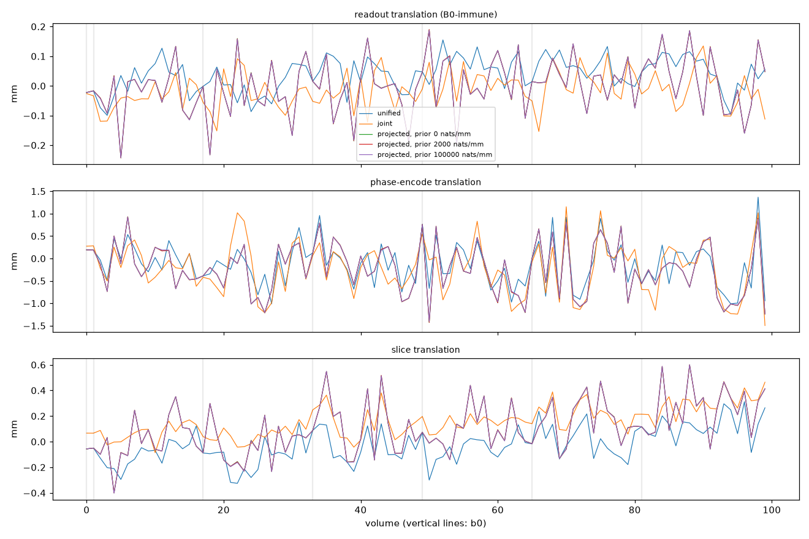

The prior weight is in nats per mm of second difference beyond the 0.05 mm knee, entering the loss multiplied by the measured
sigma^2 / S of the stage's points (surround_scale='likelihood'). Step MAD: robust frame-to-frame step per axis
(mm; pitch at 50 mm). The readout step is the B0-immune floor: real jitter the prior must not shrink below what unified and joint
report; the phase-encode step carries eddy and contrast effects. design_locked: period-2 pose amplitude along PE relative to the
anchor level. tsd_rel: alignment (lower is better).
| engine | FD mean | FD max | step readout | step PE | step slice | step pitch | locked PE | tsd_rel | converged | s |
|---|---|---|---|---|---|---|---|---|---|---|
| unified | 0.606 | 2.32 | 0.057 | 0.696 | 0.125 | 0.090 | 0.008 | 0.6825 | 1.00 | 84 |
| joint | 0.564 | 2.53 | 0.080 | 0.560 | 0.100 | 0.088 | 0.040 | 0.6812 | 1.00 | 97 |
| projected, prior 0 nats/mm | 0.719 | 2.20 | 0.146 | 0.634 | 0.255 | 0.130 | 0.026 | 0.6804 | 1.00 | 80 |
| projected, prior 2000 nats/mm | 0.714 | 2.20 | 0.145 | 0.635 | 0.260 | 0.131 | 0.027 | 0.6805 | 1.00 | 79 |
| projected, prior 100000 nats/mm | 0.685 | 2.17 | 0.144 | 0.650 | 0.258 | 0.048 | 0.025 | 0.6817 | 0.91 | 137 |
